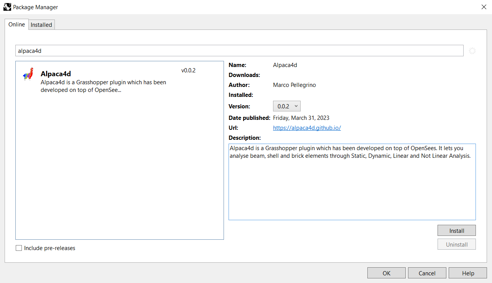

Install it in a minute.
Alpaca4d installs from Rhino's Package Manager, on Rhino 7 and Rhino 8, for Windows and macOS. The button below opens the Package Manager in Rhino.
Three clicks.
Open Rhino and launch the Package Manager from the Tools menu.
Search for Alpaca4d and click Install. The Package Manager downloads and installs the plug-in.
Restart Rhino. You will find the Alpaca4d tab in Grasshopper.

Then open Grasshopper: this is your new tab.
91 components in 13 panels, drawn from the plug-in itself. Scroll along the tab, point at an icon to see what it does, click it to open its page in the docs.
Point it at OpenSees.
Alpaca4d writes your model for OpenSees, the analysis engine from UC Berkeley, and runs it on your computer. Download OpenSees yourself (subject to its own license) and tell Alpaca4d where it is, once.
Free, or licensed
Without a license you can build and analyse models of up to 50 elements and read their results. A license lifts the limit and unlocks the viewers, the section tools, Explorer and the optimisers.